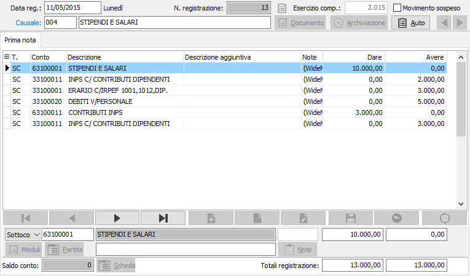

Registrazione di contabilità generale
Viene visualizzata la sezione video Prima nota; la griglia centrale contiene i righi del movimento contabile che viene progressivamente inserito mentre la sezione inferiore del video presenta la maschera di input.

TIPO CONTO: Indica la tipologia del conto utilizzato: sottoconti, clienti o fornitori. Non è obbligatorio, in quanto inserito automaticamente al momento della conferma del codice del conto.
CODICE CONTO: inserire il codice del sottoconto, presente nel piano dei conti, che si vuole movimentare. Il codice eventualmente proposto automaticamente dal programma in funzione dei parametri presenti nella causale contabile, può essere modificato dall'utente con il codice di un sottoconto della stessa tipologia a cura dell'utente. A conferma, vengono visualizzate la descrizione del sottoconto, il saldo corrente dello stesso e abilitato il bottone Scheda che consente di accedere interattivamente alla scheda contabile del sottoconto stesso. Sul campo sono attive le funzioni di ricerca (F9) e manutenzione (CTRL+W) sulla tabella stessa.
DESCRIZIONE AGGIUNTIVA: eventuale secondo rigo di descrizione, diverso per ciascun rigo del movimento contabile. Talune causali contabili prevedono un secondo rigo di descrizione automatica, che può tuttavia essere modificato dall'utente. La descrizione confermata in questo campo verrà ripresentata automaticamente nel successivo rigo del movimento contabile, a sua volta modificabile.
BOTTONE NOTE: confermando con la barra spaziatrice quando il cursore è sul bottone Note, o cliccando sullo stesso, si apre la finestra video di descrizione aggiuntiva, dove è possibile effettuare descrizioni anche molto lunghe. Queste descrizioni si aggiungeranno, in stampa Libro Giornale, in Stampa situazione sottoconti e in Stampa partitari, alle due righe precedenti di descrizione. La descrizione aggiuntiva qui inserita vale solo per il sottoconto presente nella riga attiva del movimento contabile.
DATA VALUTA: campo attivo solo in presenza di un sottoconto banca che preveda il trattamento della data di valuta. Non è obbligatorio l'inserimento della data di valuta della transazione bancaria, ma nel caso venisse lasciata vuota, il programma visualizza un messaggio di errore e consente di proseguire.
IMPORTO DARE / AVERE: a conferma, il cursore si sposta nella colonna Dare (o Avere, se la causale lo prevede), dove è possibile inserire l'importo relativo al sottoconto attivo, oppure spostare il cursore nella colonna Avere (e viceversa, dalla colonna Avere priva di importi alla colonna Dare tramite freccia su) per inserire l'importo nella sezione opposta.
A conferma dell'importo in dare o in avere, vengono incrementati i totali dare e avere della transazione, ed il cursore ritorna al campo codice sottoconto per l'eventuale inserimento di un nuovo rigo.
Sul campo Codice sottoconto è possibile inserire un nuovo rigo di registrazione contabile, oppure risalire sequenzialmente con freccia su (o tramite il mouse) a righi precedenti per eventuali correzioni (salvo ritornare poi con freccia giù al rigo da completare). Durante gli spostamenti con freccia su o freccia giù, nella griglia un triangolino evidenzia il rigo che viene riproposto nella sezione inferiore del video per l'eventuale variazione.
Al termine dell'inserimento dei dati è possibile, quando la registrazione quadra, concludere l'operazione premendo F10 o il pulsante Salva. Appare la richiesta di conferma alla registrazione; a conferma positiva, la registrazione viene conclusa, vengono aggiornate interattivamente tutte le tabelle interessate dalla registrazione stessa ed il cursore ritorna al campo Data registrazione per l'inizio di un nuovo movimento contabile.
Se viceversa si ritiene di non confermare l'operazione rispondendo no al messaggio, il cursore ritorna sull'ultimo rigo della registrazione stessa. Premendo Esc viene richiesta la conferma all'annullamento della registrazione confermando il quale il cursore ritorna al campo data registrazione da cui è possibile iniziare una nuova registrazione oppure uscire dall'immissione movimenti contabili ancora con Esc.
Non è possibile concludere una registrazione priva di quadratura: tentando la conclusione con F10, appare un messaggio di avviso e successivamente il cursore ritorna sul rigo di registrazione contabile al campo codice sottoconto per l'inserimento del codice e dell'importo a quadratura oppure per correggere eventuali righi precedenti errati.